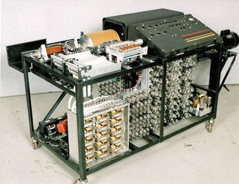

|  |
Em 1936, Alan Turing publicou um artigo que introduziu o conceito de uma máquina teórica, conhecida como "Máquina de Turing". Esta máquina era capaz de realizar qualquer cálculo que pudesse ser descrito por um algoritmo, definindo assim o conceito de funções computáveis. A Máquina de Turing se tornou a base da teoria da computação e estabeleceu o que é computacionalmente possível. Atanasoff, influenciado por suas pesquisas e pela necessidade de realizar cálculos complexos de forma mais eficiente, concebeu a ideia de um computador que operasse em base binária, um sistema que se tornaria fundamental para os computadores modernos. Ele propôs o uso de válvulas termiônicas (tubos de vácuo) para a lógica e capacitores para a memória, permitindo a realização de operações aritméticas rápidas e precisas. Essas inovações de Alan Turing e John Atanasoff não apenas moldaram o desenvolvimento inicial da computação, mas também abriram caminho para as tecnologias que conhecemos hoje. O conceito da Máquina de Turing estabeleceu os fundamentos teóricos que sustentam a ciência da computação, enquanto a introdução de sistemas binários e componentes eletrônicos revolucionou a forma como realizamos cálculos e processamos informações. Juntas, essas contribuições lançaram as bases para a construção dos computadores modernos, transformando radicalmente o mundo em que vivemos e possibilitando avanços significativos em diversas áreas, desde a ciência até a tecnologia da informação. A herança desses pioneiros continua a influenciar a evolução da computação, mostrando que suas ideias visionárias ainda ressoam em nossos dias. |